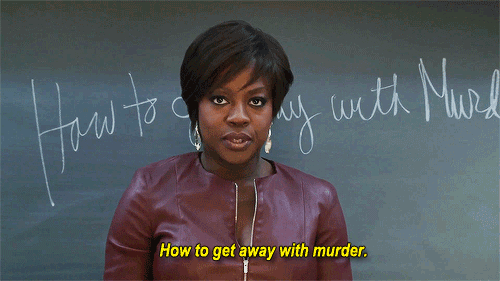

Annalise Keating
"I am who I am. If you don't like it, I don't care."
Annalise Keating, played by Viola Davis in How to Get Away with
Murder, is a brilliant defense attorney and law professor who
mentors students while dealing with high-stakes cases and personal
struggles.
Connor Walsh
"I'm not a good person, but I'm a great lawyer."
Connor Walsh, portrayed by Jack Falahee in How to Get Away with
Murder, is a law student known for his sharp wit, moral ambiguity,
and complex relationships.
Michaela Pratt
"I'm not going to apologize for being smart."
Michaela Pratt, portrayed by Aja Naomi King in How to Get Away with
Murder, is a driven and ambitious law student who navigates personal
and professional challenges with intelligence and determination.
Wes Gibbins
"I don't want to be a part of this."
In How to Get Away with Murder, Alfred Enoch plays Wes Gibbins, a
good-hearted and bright law student who becomes caught up in the
dangerous situations involving his classmates and Professor Annalise
Keating.
Laurel Castillo
"You don't get to just walk away from this."
Laurel Castillo, portrayed by Karla Souza in How to Get Away with
Murder, is a smart and determined law student with a complex past,
who becomes deeply involved in the legal and personal drama
surrounding her classmates and Professor Keating.
Asher Millstone
"I'm not a hero. I'm just a guy who wants to do the right thing."
Matt McGorry plays Asher Millstone, a pleasant but unsophisticated
law student who battles with moral choices and frequently tries to
do the right thing.